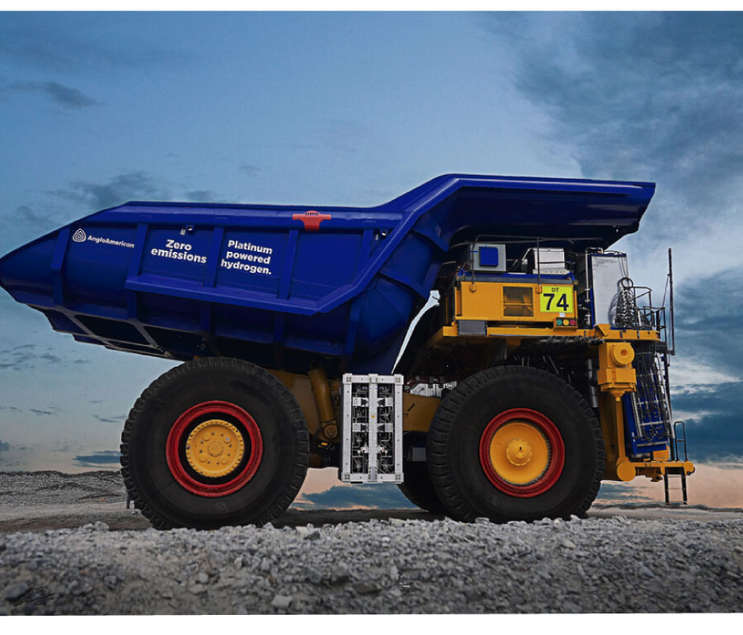

Se estima que el número total de camiones CAEX, alcanza la cantidad de 1500 unidades, repartidas entre las diferentes empresas mineras del norte y centro de Chile de los cuales el 80% aproximadamente se encuentra operando en la Región de Antofagasta, lo que equivale a 1200 camiones en total.
Casos de uso
Oportunidad de aplicación
Actualmente no hay disponibilidad comercial de camiones de extracción mineros (CAEX) que sean potenciados mediante celdas de combustible a hidrógeno. Sin embargo, la empresa Anglo American está actualmente desarrollando un piloto de camión CAEX en Sudáfrica.
Dicho proyecto piloto consiste en un sistema de producción de hidrógeno mediante celdas fotovoltaicas, un sistema de dispensado de hidrógeno para camión CAEX, y un camión CAEX para 390 toneladas de mineral, equipado con un sistema de energía basado en celda de combustible e hidrógeno y baterías. Este camión minero es el primero en su tipo en el mundo y el piloto comenzó con las pruebas en la mina de Anglo American llamada Mogalakwena con fecha 06 de mayo de 2022.
Tecnología
La flota de 1.200 camiones CAEX, presenta un consumo total de combustible diésel de aproximadamente 1.300 millones de litros anualmente.